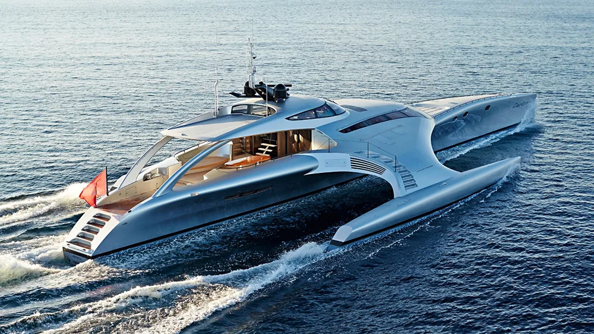
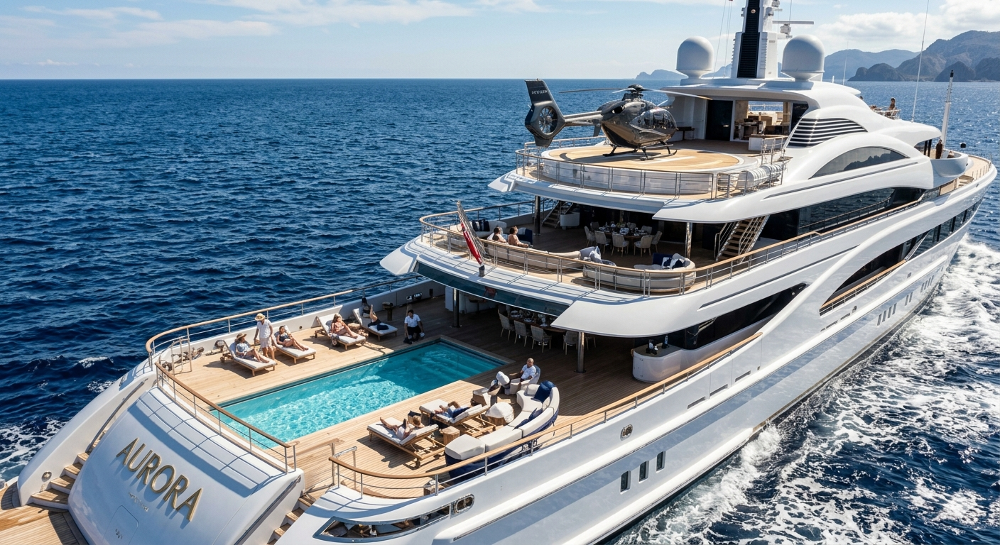
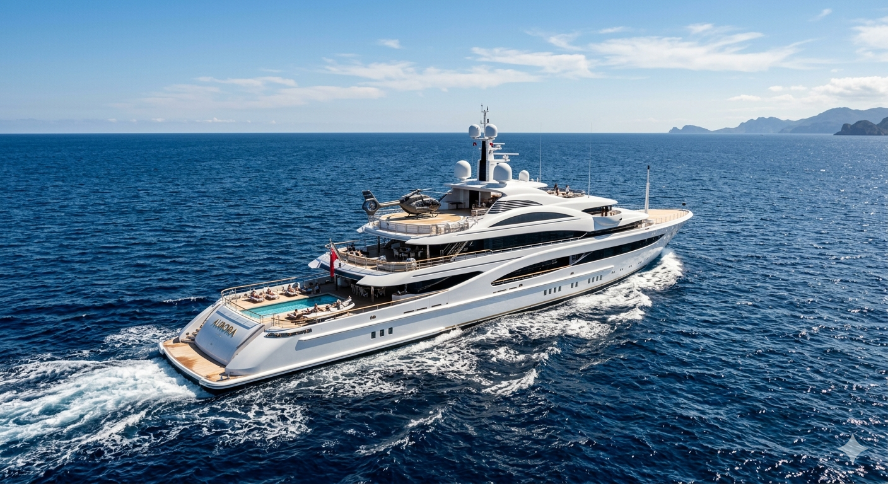
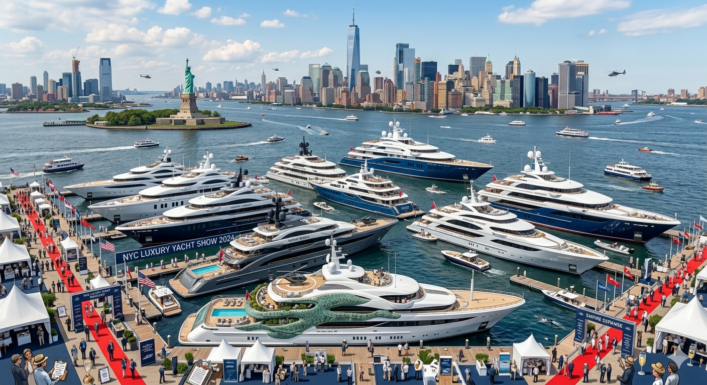
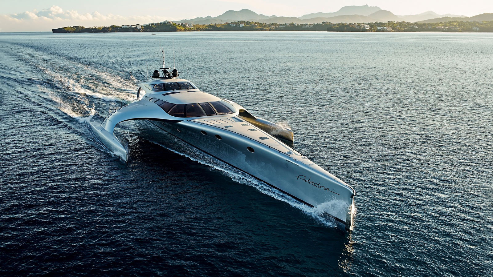

Innovation at Sea: Yacht Engineering Enters a New Era
The world of yacht engineering is undergoing a sweeping transformation, as emerging technologies and environmental priorities redefine how luxury vessels are conceived, constructed, and operated. Once driven largely by speed, size, and onboard comfort, the industry is now pivoting toward sustainability, automation, and advanced materials—marking what many experts describe as a pivotal moment in maritime innovation.
At the forefront of this evolution is the push for greener propulsion systems. Traditionally powered by large diesel engines, modern yachts are increasingly incorporating hybrid and fully electric technologies. Industry leaders such as Feadship and Benetti have announced ambitious initiatives to cut emissions and develop vessels capable of operating with significantly reduced environmental impact. Some newer models are even exploring hydrogen-based fuel systems, signaling a long-term shift away from fossil fuels. "Sustainability is no longer optional—it's expected," said one marine industry analyst. "Owners are asking not just how fast or luxurious a yacht is, but how responsibly it operates."
Advanced Engineering in Action

This change in mindset is being driven not only by environmental awareness but also by tightening international regulations. Organizations such as the International Maritime Organization are introducing stricter emissions standards, pushing manufacturers to innovate or risk falling behind. In addition to propulsion, yacht engineers are revolutionizing vessel construction through the use of advanced materials. Carbon fiber composites, lightweight alloys, and reinforced polymers are replacing traditional steel in many applications. These materials allow yachts to be lighter and more fuel-efficient without sacrificing strength or durability. Engineers say this shift not only improves performance but also extends the lifespan of vessels operating in corrosive saltwater environments.

Hydrodynamic optimization is another area seeing rapid advancement. Using sophisticated computer simulations and testing methods, engineers can design hulls that reduce drag and improve stability even in rough seas. The result is a smoother, more efficient ride—an increasingly important factor for both luxury and long-distance travel. Automation and digital integration are also reshaping life onboard. Today's yachts feature highly advanced control systems that integrate navigation, propulsion, energy management, and onboard amenities into a single interface. Touchscreen dashboards and remote monitoring systems allow crews to oversee nearly every aspect of the vessel in real time.

Some manufacturers are going even further by introducing semi-autonomous capabilities. These systems can assist with docking, route optimization, and collision avoidance, reducing the workload on crew members and enhancing safety. While fully autonomous yachts remain largely experimental, industry experts believe they could become viable within the next decade. However, these technological leaps come with significant engineering challenges. Yachts must operate reliably in some of the harshest environments on Earth, where saltwater corrosion, high humidity, and unpredictable weather conditions can quickly degrade equipment. Engineers must rigorously test every system to ensure durability and safety, often designing redundancies to prevent failures at sea.

Customization adds another layer of complexity. Unlike commercial ships, many yachts are built to the exact specifications of individual owners. This means engineers must tailor everything—from propulsion systems to interior layouts—without compromising structural integrity or performance. Balancing personalization with engineering constraints requires careful planning and close collaboration between designers, engineers, and clients. The economic implications of these changes are substantial. The global yacht industry is valued in the billions of dollars and supports a wide network of suppliers, shipyards, and specialized engineering firms. As demand grows for technologically advanced and environmentally friendly vessels, companies are investing heavily in research and development to stay competitive.

Despite the rapid pace of change, experts emphasize that safety remains the industry's top priority. Every new technology must meet rigorous certification standards before it can be deployed, ensuring that innovation does not come at the expense of reliability. Looking ahead, many believe the yachts of the future will serve as floating laboratories for cutting-edge technology. Concepts such as fully electric long-range vessels, AI-assisted navigation, and zero-emission cruising are already in development, hinting at a future where luxury and sustainability are fully aligned.
"The next generation of yachts will be defined by intelligence as much as elegance," said one senior engineer. "We're not just building boats—we're engineering ecosystems." As the industry continues to evolve, yacht engineering stands at the intersection of luxury, technology, and environmental responsibility. What was once a symbol of wealth alone is rapidly becoming a showcase of innovation, offering a glimpse into the future of transportation on water.